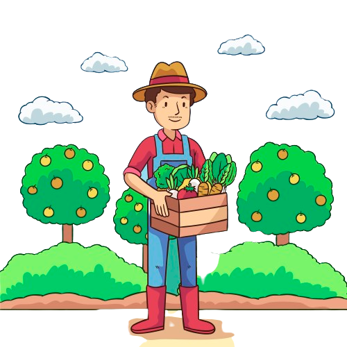

PRESERVAÇÃO DO MEIO AMBIENTE
Reduz o impacto negativo no ecossistema
Preserva o solo, a água e a biodiversidade.
Saiba mais sobre a revolução da agricultura sustentável com Inteligências Artificiais Regenerativas!
A agricultura ecológica é crucial para proteger o meio ambiente e assegurar a segurança alimentar global. Ela harmoniza a produção de alimentos com a preservação dos recursos naturais, oferecendo benefícios importantes.
VEJA ABAIXO:
Reduz o impacto negativo no ecossistema
Preserva o solo, a água e a biodiversidade.
Assegura o acesso a alimentos seguros e nutritivos;
Promove a diversidade de culturas e sistemas resilientes.
Melhora o uso de água, energia e terra;
Evita desperdícios e melhora a eficiência produtiva.
Aumenta as condições de vida dos agricultores;
Fortalece comunidades rurais e promove a equidade social.
Reduz os impactos das mudanças climáticas por meio da captura de carbono;
Adota energias renováveis e diminui as emissões de gases de efeito estufa.
A agricultura ecológica é fundamental para um futuro alimentar saudável, protegendo o planeta e assegurando alimentos de qualidade para as próximas gerações.
Confira alguns dos inúmeros benefícios e aplicações inovadoras que as Inteligências Artificiais Generativas oferecem a agricultura: